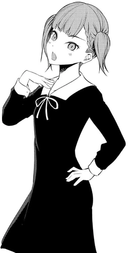

Maki Shijo(四条 眞妃しじょう まき, Shijō Maki) is a supporting character in the Kaguya-sama wa Kokurasetai series. She is a third-year high school student at Shuchi'in Academy and a member of Volunteering Club. She is a daughter of the Shijo family, a branch family of the Shinomiya house. Specifically, she is a cousin of Kaguya.
| Maki Shijo | |
|---|---|
| Manga | Anime |
|  | |
| Profile | |
| Age | 17 |
| Birthday | 1 January |
| Gender | Female |
| Eye Color | Purple |
| Hair Color | Light Brown |
| Height | 155 cm |
| Personal Status | |
| Occupation | High School Student |
| Grade | Junior (2-B) |
| Portrayal | |
| Japanese VA | Kana Ichinose |
| English VA | Hope Endrenyi |
| Debut | |
| Manga | Chapter 6 |
| Anime | Episode 16 |
Maki is a cute young girl with short brown hair that is tied up in short pigtails with bangs covering her forehead and her eye color is solid pink (purple in the anime). Prior to her current appearance, she had shoulder-length hair.
She is often seen dressed in a Shuchi'in Academy school uniform.
Maki is in many ways very similar to Kaguya Shinomiya; Both act cold on the outside but are really sweet inside. As descendants of the Shinomiya bloodline, both exhibit pride and arrogance. Both of them also have a knack for scheming. But underneath these personality traits are innocent, kind and fair-minded teenage girls at heart.
Compared to Kaguya, Maki has a more casual feel when interacting with others, always referring to people by their first names and without any honorifics. She is somewhat inconsistent with her emotions and is unable to maintain an arrogant act, especially when the topic concerns Tsubasa Tanuma. Hailing from a branch family and not the main Shinomiya house, she has not been raised completely sheltered and isolated like Kaguya.
Maki is a member of a branch family of the Shinomiya house who has a younger twin brother who attends a public school. She is one of Kaguya Shinomiya's second cousin twice removed. Their coldness towards each other mirrors the tensions between the main family and its branch families.
She is a friend with Nagisa Kashiwagi who is secretly jealous of her relationship with her boyfriend as she too liked Tsubasa Tanuma, but she could not confess before as she is against the idea, similar to how Kaguya views confessions. She lost her chance when Nagisa accepted Tsubasa's sudden confession on the spur of the moment and they became a couple.
Her troubles led to her being an occasional visitor of the Student Council room from time to time and considers Yu Ishigami and Miyuki Shirogane as friends for their support in helping her cope with her failed romance.
During the Culture Festival, she went with Kaguya to the haunted house by Yu's class even when they didn't do well with scary stuff. She dances with Nagisa at the bonfire. During Christmas, she went to India to reach enlightenment but failed. After the winter break, Yu shared to her the events that led to Miko Iino's broken arm. She wished to be in a same situation with Tsubasa, envious of the treatment Miko was receiving from Yu
The name Maki means "truth, reality, Buddhist sect" (眞) (ma) and "queen, princess" (妃) (ki). Maki's surname Shijo means "four" (四) (shi) and "article" (条) (jo).